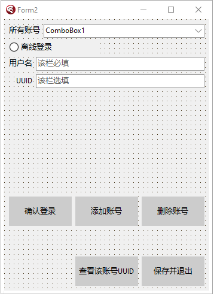
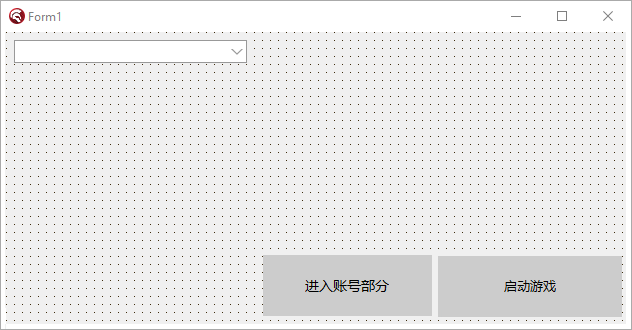

本章教会大家如何将账号信息保存到外部文件
注意：本章可能会稍微有点长，因为干货比较多，我们需要搭建一个账号部分的框架。
在后期，微软登录和外置登录之时，会因为这一期而大大减少了篇幅量。
其实，在之前的教程中，我们做的就是支持离线登录，并且当时，我们使用的UUID为【0123456789abcdef0123456798abcdef】这么个32位无符号小写uuid，但是，众所周知，肯定不止这么一种uuid的拼法。
据统计，这么一个32位uuid的拼法，在uuid诞生那一年，其制作者就说过：UUID是一种极为安全的玩家身份验证渠道，以我们现在的时间来说，就算每一纳秒生成一个UUID，也需要将近一百亿年之后，UUID才会被用完。
这种身份验证甚至被用在了二维码上，因此，我们根本无需担心世界上的二维码或者是UUID会被用完。也更不用杞人忧天的想到自己的UUID可能会被别人给盗用。
好吧，我们开始写代码吧：
首先，右键IDE右侧栏上的exe，然后点击Add New，然后新建一个VCL窗体。
窗体样式大概是这样的：

然后，我们点击Ctrl+S键保存这个窗体，然后给该窗体文件命名为【AccountForm.pas】即可。
然后，我们再在主窗口上，建立一个这样的按钮：

双击这个按钮，进入代码编辑视图，我们首先第一步，需要滑到最顶端，引用一个单元文件，单元文件名自然就是我们的窗体文件啦！
在以后每次大家新建窗体时，如果需要在别的窗体中打开另一个窗体，就必须要在这个窗体里面引用那个窗体的头文件：
uses
AccountForm;
使用完毕之后，我们就可以回到按钮点击事件，在里面写上这么一段话
procedure TForm1.Button2Click(Sender: TObject);
begin
Form2.ShowModal; //Form2指的是账号窗体属性中的name值，多半是唯一的。
end;
是的，只需要Show一次，就可以了！此时，你可能会问：为什么不用像C#那样new一次【指调用一次Create方法】后，才能显示呢？
其实，Delphi已经帮我们做好工作了！右键右侧文件树状图上面的exe，然后点击View Source，你就能看见，Delphi在单元执行主线程中，已经为我们使用CreateForm创建过一个窗体了！我们只需要使用其内部的Show方法即可！
然后嘛，让我来解释一下Show和ShowMadel方法的区别，首先，Show是指使用一个额外线程启动这个窗口，意思就是不锁定住主窗口启动。ShowModal的意思是锁定住主窗口，利用主线程直接开始执行窗体代码的意思。该种方式与C#中的ShowDialog一致。
然后，我们就要正式的在AccountForm里面敲代码了！
首先，我们需要敲出离线登录的代码。按照我们上述的布局，我们点击【添加账号】的按钮，进入按钮点击事件。
让我们首先介绍一下这个按钮的主要功能吧！这个按钮的主要功能就是将账号的名称添加进上方的所有账号的下拉框里面。该按钮同样适配于微软登录、外置登录。同样的，我们需要置一个单选框，用于给玩家选择应该使用哪种登录方式。
进入点击事件，我们开始写代码咯！【ps：这里的添加按钮名称为Button2】，其余的按钮我会在之后挨个和大家说的。
procedure TForm2.Button2Click(Sender: TObject);
var
uid: TGuid; //在函数开头声明一个uid。
begin
if RadioButton1.Checked then begin //该处直接判断离线登录的单选框是否选上。
if (Edit1.Text = '') or (not TRegex.IsMatch(Edit1.Text, '^[A-Z0-9a-z]')) or (Length(Edit1.Text) > 16) or (Length(Edit1.Text) < 3) then // 如果玩家名称为空
begin //对玩家名称进行判断。
messageBox(Handle, '你的离线登录名称并不理想，输入错误！请不要输入中文，也不要超过16个字符！不要为空。', '错误警告', MB_ICONERROR);
exit;
end;
var tuid: String := Edit2.Text; //获取UUID编辑框的内容。
tuid := tuid.ToLower; //对其进行小写。【如果有的话】
if (tuid = '') then begin //判断其是否为空（为空则随机生成一个UUID）
CreateGuid(uid); //如果为空，则为uid变量初始化
tuid := GuidToString(uid).Replace('{', '').Replace('}', '').Replace('-', '').ToLower; //对tuid赋值，将Guid变成String后赋值上去。
end;
if not TRegex.IsMatch(tuid, '^[a-f0-9]{32}') then begin //用正则表达式判断tuid是否符合32位无符号UUID
messageBox(Handle, '你的离线登录UUID输入错误，请输入一串长32位无符号UUID。或者不输入等待随机生成', '错误警告', MB_ICONERROR); //如果不是，则退出方法。
exit;
end;
//将所有目标添加到配置文件，写入Json
(AccountJson.GetValue('account') as TJsonArray).Add(TJsonObject.Create
.AddPair('type', 'offline')
.AddPair('name', Edit1.Text)
.AddPair('uuid', tuid)
); //如果仔细看这一行，我们就会发现，我们将配置文件是写在这里的：
(*
Delphi里面使用这种符号来进行多行注释。
{
"account": [
{
"type": "offline",
"name": "<玩家名称>"
"uuid": "<玩家UUID>"
}
]
}
*)
//我们发现，这个Json不是一个列表形式，而是在一个对象中建立了一个名为account为键名的列表，然后在列表中新键type和name啥啥的。
//这个键我们稍后再说，稍后我会对其进行讲解。
ComboBox1.ItemIndex := ComboBox1.Items.Add(Concat(Edit1.Text, '（离线）')); //给下拉框添加元素，顺便赋值给最终值。
Edit1.Text := '';//给Edit设置为空
Edit2.Text := '';
messagebox(Handle, '添加成功！', '添加成功', MB_OK+MB_ICONINFORMATION);
end; //后期微软登录之时，我们只需要把这个分号去掉，然后在下面写上 else if RadioButton2.Checked then 即可。
end;
在上述代码中，我们用了一个正则表达式来匹配UUID是否真的为32位无符号UUID。
该正则表达式需要引用Delphi的一个单元：【本次使用别的Form，在你不确定自己需要引用哪些单元文件的时候，你需要将MainForm里的单元文件全部引用到该Form里面。】
uses
RegularExpressions;
然后呢，还有一件事，下面有个AccountJson，这个是从哪里来的呢？哦！我们在implementation的下方，建立一个AccountJson，这个Json文件作为我们的账号配置Json。
我们需要在其中新建一个变量，见下
implementation
var
AccountJson: TJsonObject;
但此时，我们还不能直接使用它，因为它只是一个没有初始化过的变量。我们需要做的，就是在FormCreate中为这个变量new一次。
回到窗体视图，双击窗体，我们便可以打开FormCreate事件。
在里面这么写即可：
procedure TForm2.FormCreate(Sender: TObject);
begin
AccountJson := TJsonObject.Create;
end;
写下这么一段话即可对AccountJson进行初始化操作。之后我们便可以对AccountJson进行自由加键删键处理。
如果你发现上述代码报错，那绝大概率是你的JSON单元没有引用，你需要去看上面的介绍。
然后，我们就需要去对这个Json文件进行处理。在上面，我们为其添加了新键。
接着，我们便可以回到主界面，双击保存并退出按钮，然后进入事件【我的按钮name是Button4】开始写下保存账号信息的代码：
procedure TForm2.Button4Click(Sender: TObject);
begin
SaveFileToOutside(Concat(ExtractFilePath(Application.ExeName), 'launcher\AccountJson.json'), AccountJson.Format);
Close; //这里使用了Format函数，此为将Json字符串进行格式化后保存到外部文件。我们还使用了Application.ExeName，这个意思指的是获取exe当前目录。
end;
将上述文件保存出去即可。其中，我们使用了一个新的函数，名为SaveFileToOutside，这个函数是一个自制函数，用途是将内容字符串保存到外部文件。现在，我们回到MainForm中，书写这个函数吧！
procedure SaveFileToOutside(path, content: string);
begin
var ss := TStringStream.Create('', TEncoding.UTF8, False);//定义一个流
if not DirectoryExists(ExtractFilePath(path)) then ForceDirectories(ExtractFilePath(path));//判断文件夹是否存在，如果不存在则强制生成一个文件夹。
try
ss.WriteString(content); //写入字符串进流
ss.SaveToFile(path); //将流保存到外部文件。
finally
ss.Free;
end;
end;
然后，还是在implementation下面写上这个函数。
此时，大家可能会发现在AccountForm中，还是无法引用这个函数啊？那是因为我们还没有引用这个MainForm文件呢！
让我们在implementation下方写上这串代码：
implementation
uses
MainForm;
即可使用了！
然后，我们双击FormCreate，我们需要在该窗口刚刚创建之时，就立刻对Account支持，我们需要判断其文件是否存在，如果存在，则加载Json，如果不存在，则抛出报错，初始化Json
procedure TForm2.FormCreate(Sender: TObject);
begin
AccountJson := TJsonObject.Create;
if not FileExists(Concat(ExtractFilePath(Application.ExeName), 'launcher\AccountJson.json')) then begin //给Json变量初值附上一个account的JsonArray
AccountJson.AddPair('account', TJsonArray.Create); //是的，直接在这里初始化account键。
var j := AccountJson.Format; //将Json格式化并导出
SaveFileToOutside(Concat(ExtractFilePath(Application.ExeName), 'launcher\AccountJson.json'), j); //保存至外部文件。
end else begin //如果有则执行
var j := GetOutsideDocument(Concat(ExtractFilePath(Application.ExeName), 'launcher\AccountJson.json')); //获取外部文件的AccountJson内容，再将其转换成Json对象。
AccountJson := TJsonObject.ParseJSONValue(j) as TJsonObject; //给Account附上初值。
end;
try //以下代码是：为下拉框添加进元素。
for var I in (AccountJson.GetValue('account') as TJsonArray) do //遍历Json数组
begin //如果找到的type为offline，那么添加为离线登录，如果检测到microsoft，那么添加为微软正版登录。
var tpe := I.GetValue<String>('type'); //获取type值
if tpe = 'offline' then ComboBox1.Items.Add(I.GetValue<String>('name')) //如果是离线，则在下拉框中添加。后期可以直接在下面输入else microsoft的！
end;
except
tp := -1;
ComboBox1.ItemIndex := -1;
end;
end;
这样，我们就已经做好了在程序一旦启动之时，立刻就给我们的程序初始化所有的账号信息了。
然后，下一步，我们需要制作确认登录的功能，这个功能很简单，请看代码：功能晚点会说【我的确认登录按钮是Button1】，在窗体视图双击按钮进入代码编辑：
procedure TForm2.Button1Click(Sender: TObject);
begin
var pln := ((AccountJson.Values['account'] as TJsonArray)[ComboBox1.ItemIndex] as TJsonObject).GetValue('name').Value; //通过ComboBox1的ItemIndex属性，成功获取到目前登录的账号玩家名称。
tp := ComboBox1.ItemIndex; //tp是一个全局变量，专门获取玩家名称。
messagebox(Handle, '确认成功！', '确认成功', MB_OK); //弹出一个信息框说明确认成功
end;
其中，有一个名为tp的变量，它其实是一个全局变量，用于存储玩家当前选择了第几号账号。例如我选择的是1号，那么这个变量将存储0，如果没有确认账号，则这个变量将存储-1。
其实，这个地方我们可以不用按钮来写的，我们可以直接双击上面的ComboBox下拉框，然后写上上面这一串的，然后messagebox我们也可以去掉的！
由于此篇教程过于古老，我不太可能在没更新完下面几章节时返回来修改原有目录，而且我的启动器示例也有所更改，我不太会重新删掉控件从而为了适配老期教程，因此，大家完全可以动动自己的小脑袋，自己动手实现自己想要的功能哟！
然后，我们需要在全局变量中定义一个这种变量【由于这个数字，我们并没有将其保存到外部文件，大家也当然可以将其保存到外部，这样可以在打开启动器的同时，自动装载玩家选择的账号，同时在账号部分窗口创建的时候，也同样将下拉框的ItemIndex属性，赋值位于这个变量的外部值哦！】
AccountForm.pas
var
Form2: TForm2;
tp: Integer = -1; //定义一个初值。
implementation
【这里由于篇幅原因，就不实现上述保存到外部了。（视频教程里也照样没有保存。）】
然后然后，我们回到MainForm中，我们需要改改启动游戏的逻辑咯！
首先，去除全局常量UserName，然后在Button1Click中这样写
procedure TForm1.Button1Click(Sender: TJsonObject);
var
PlayerName: String;
PlayerUUID: String;
PlayerType: String;
PlayerAcTo: String;
PlayerAuth: String; //这里需要添加一个额外变量，这个变量后期我们在添加Authlib-Injector时会说道！
begin
... //前面省略
var res := lch.SelectParam(root); //成功获取到拼接完成后的json文件。
try
var JsonAbout := TJsonObject.ParseJSONValue(GetOutsideDocument(Concat(ExtractFilePath(Application.ExeName), 'launcher\AccountJson.json'))) as TJsonObject; //获取外部json文件
var chooseAbout := (JsonAbout.GetValue('account') as TJsonArray)[tp] as TJsonObject; //获取当前选择的代码块
var typetemp := chooseAbout.GetValue('type').Value; //获取选择的type键
if typetemp = 'offline' then begin //如果type键等于offline，则执行。
PlayerName := chooseAbout.GetValue('name').Value; //设置为name
PlayerUUID := chooseAbout.GetValue('uuid').Value; //设置为uuid
PlayerAcTo := PlayerUUID; //accessToken等于uuid
PlayerType := 'Legacy'; //type为Legacy。
PlayerAuth := ''; //这里当然要设置为空啦！后期再说！
end; //后期直接在这里接上microsoft等就可以了！
except
messagebox(Handle, '你还暂未选择一个账号，请去选择一次吧！', '暂未选择', MB_ICONERROR);
exit;
end;
//在这两行代码的中间，新建一个这样的代码块
if not lch.UnzipNatives(root, MinecraftPath, spath) then begin
... //后面省略
.Replace('${auth_player_name}', PlayerName)
.Replace('${auth_uuid}', PlayerUUID)
.Replace('${auth_access_token}', PlayerActo)
.Replace('${user_type}', PlayerType)
.Replace('${authlib_injector_param}', PlayerAuth) //这里还是额外的参数噢！后期再说！
当我们写好上述代码，并且改好之后，我们就可以正常的打开启动器了，然后尝试一下，进行一次离线登录MC吧！
好了好了，既然如此，你已经可以正常的启动Minecraft并应用离线登录了，但是文章当中还有很多问题没有体现出来，这些问题的修复就留给大家当作作业啦！大家可以自行去修复这些问题哦！
但是，切记一点，由于我的AccountJson是保存在exe目录下，因此这种情况有很高的风险性会被人家盗取AccessToken，因此，我们也必须将AccountJson保存到一个安全的地方。【例如AppData\Roaming】目录下，或者Local目录下。
好了，话就说这么多，尽情期待下一章吧！